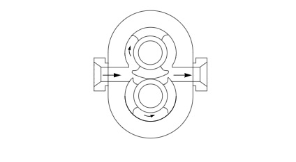

In positive displacement pumps, the liquid is forced to move because it is displaced by the movement of a piston, vane, screw, or roller. The pumps force liquid into the system regardless of the resistance that may oppose the transfer. It is particularly important therefore, to consider to the wider pumping system and safety requirements, particularly the potential need for relief valves to avoid over pressurisation of the system when using positive displacement pumps.
Positive displacement pumps generally carry a higher overall efficiency than centrifugal pumps because internal losses are minimised.
Rotary pumps are a category of positive displacement pumps consisting of a chamber that contains gears, cams, screws, lobes, plungers, or similar devices actuated by rotation of the drive shaft. These valves feature no separate inlet and outlet valves and run with tight clearances. Typical applications include:
In this pump, liquid is carried from inlet to outlet in spaces between piston surfaces. There are no sealing contacts between rotor surfaces.
In the external circumferential piston pump, the rotors must be timed by separate means and each rotor may have one or more piston elements.
In the internal circumferential piston pump, timing is not required, and each rotor must have two or more piston elements.
Selecting an appropriate pump type is the first step, after which, the pump must be appropriately sized for the particular application. This requires significant understanding of the wider pumping system, particularly to establish the required pump duty.
Notable inputs:
Several industry tools exist to aid in pump sizing using the above inputs. One such useful tool by Xylect is linked here. Additionally, the following spreadsheet may be particularly helpful in establishing the aforementioned inputs. (This file can also be found in the supporting documents folder.)